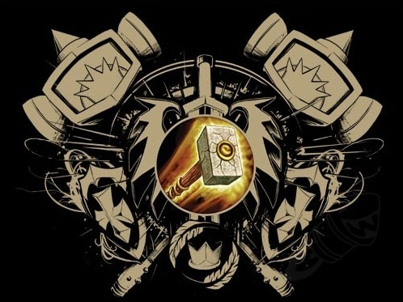

Retribution
Retribution Paladins—often called “Ret Pally” or simply “Ret”—embody the martial side of the Paladin class. They channel the Light into explosive melee damage, all while retaining the signature plate armor and group utility that make paladins unique. A Retribution Paladin is a holy crusader who punishes the wicked with hammer and blade. Unlike Protection (defensive) or Holy (healing) specializations, Retribution focuses on righteous offense: divine strikes, radiant cleaves, and judgment that sears foes with holy fire. The spec’s lore roots reach back to Warcraft II, where paladins first appeared as mounted warriors wielding both sword and sacred magic.
Protection
Protection Paladins—often dubbed “Prot Pally”—are the Light‑forged bulwarks of Azeroth. They stand at the front line clad in plate, wielding a shield infused with holy magic, and convert faith into potent mitigation and group support. Protection Paladins are World of Warcraft’s shield‑bearing tanks, blending heavy plate, holy magic, and unmatched utility to keep allies safe. Their kit revolves around Avenger’s Shield for ranged pulls and interrupts, Shield of the Righteous to reduce incoming damage, and a toolbox of cooldowns like Ardent Defender and Guardian of Ancient Kings that flatten damage spikes. Over time the spec
Holy
Holy Paladins—nicknamed “Holy Pally”—are plate‑wearing healers who combine direct, bursty heals with protective utility, anchored by their iconic Beacon of Light transfer mechanic. They excel at spot‑healing tanks, saving allies with massive cooldowns like Lay on Hands, and offering raid‑wide mitigation through Devotion Aura. Holy Paladins deliver bursty, targeted healing wrapped in plate‑armored survivability and unrivaled utility. Whether spearheading Mythic+ keystones with Beacon of Virtue or anchoring raid tanks with endless Word of Glory crits, the Light’s devoted guardians remain a mainstay of every serious group composition.
For a more detail about the history of paladins and their legandary heroes please visit the linked wiki. It will contain information about the gameplay of the class and the lore of the class throughout the history of the Warcfraft world.